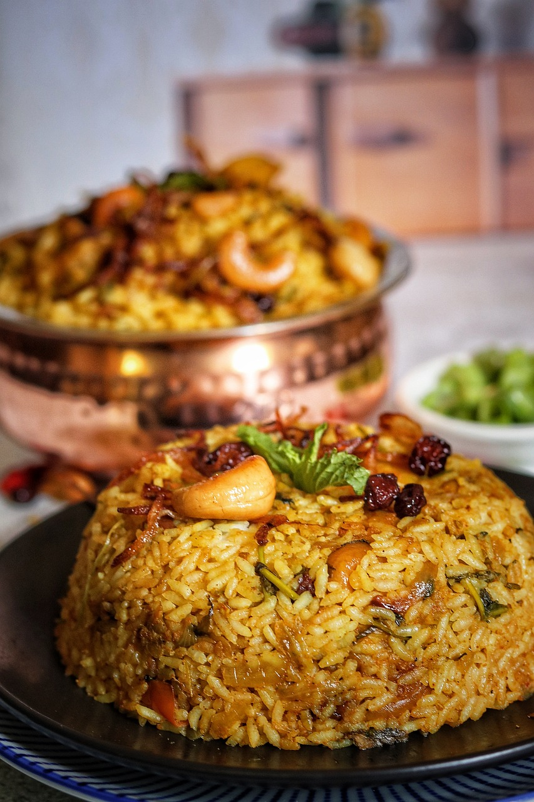

Vizag Food
"Vizag Foods"
Items
- Biryani
- Varities of Curries
- Roti and Curry
Biryani
Biryani is a flavorful and aromatic South Asian dish made with basmati rice, spices, and usually includes meat such as chicken, mutton, or fish, though vegetarian versions are also popular. The dish is often garnished with fried onions, fresh herbs, and sometimes boiled eggs, creating a rich and satisfying meal. Biryani has numerous regional variations, each with its unique blend of spices and preparation techniques, reflecting the diverse culinary traditions of the Indian subcontinent.
Biryani, a beloved dish of the Indian subcontinent, is a fragrant and flavorful combination of basmati rice, spices, and meat or vegetables, often cooked using the traditional "dum" method to meld the ingredients together. With regional variations like the spicy Hyderabadi, the milder Kolkata with potatoes, and the aromatic Lucknowi, biryani showcases the diverse culinary traditions of South Asia.
Varities of Curries

Indian curries are incredibly diverse, ranging from the creamy and mildly spiced butter chicken of the north to the fiery and tangy vindaloo of Goa, which reflects Portuguese influences. South Indian curries, such as the coconut-based Kerala fish curry, are known for their distinct flavors and use of local ingredients like tamarind and curry leaves. Additionally, vegetarian curries like the rich and hearty paneer tikka masala and the spicy, tomato-based baingan bharta highlight the versatility and depth of Indian vegetarian cuisine.
Roti and Curry
Roti and curry is a quintessential Indian meal, combining the soft, unleavened flatbread roti with a variety of flavorful curries. This pairing allows the roti to soak up the rich, spiced gravies of curries such as chicken masala, aloo gobi, or dal, creating a harmonious blend of textures and tastes. Roti and curry is not only a staple in Indian households but also enjoyed worldwide for its comforting and satisfying nature.